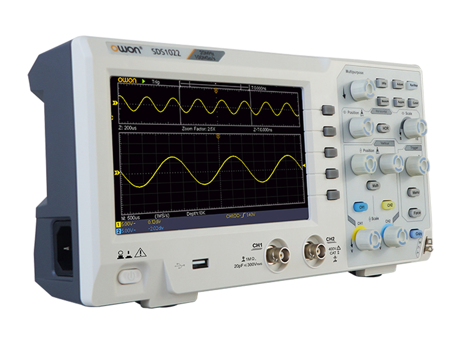
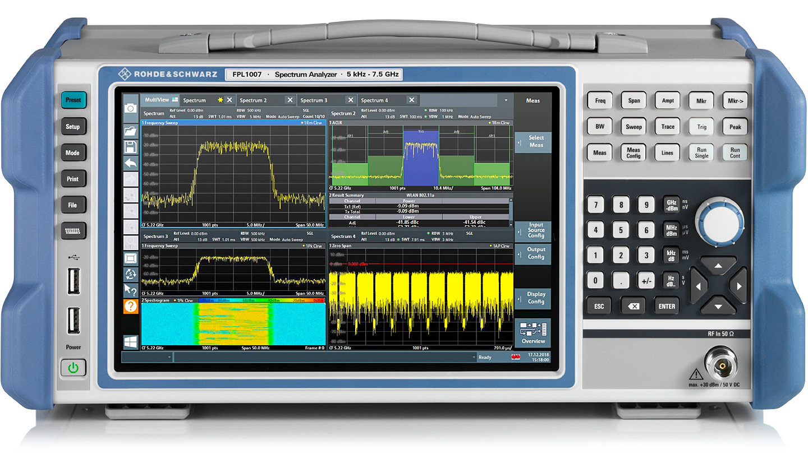
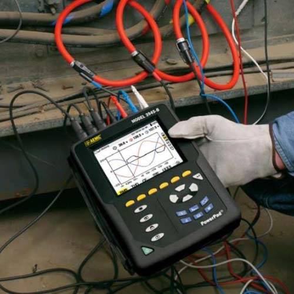
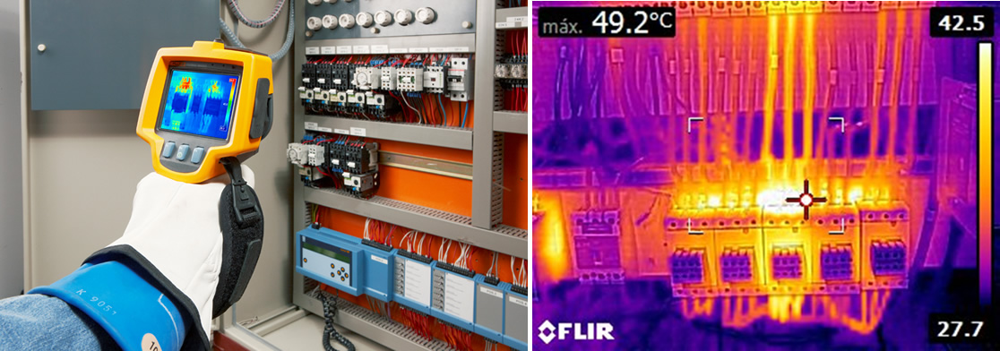

Las herramientas más importantes para el diagnóstico y reparación de averías son los instrumentos de medida, los cuales ya es hemos visto en otros temas. Los instrumentos de medida más comunes son:
Polímetro digital
También conocido como multímetro, es un instrumento electrónico que combina varias funciones, siendo las más comunes las de voltímetro, amperímetro y ohmímetro.
Pinza amperimétrica
Es un instrumento práctico y útil que permite medir la corriente que circula por un circuito sin necesidad de interrumpirlo. Se utiliza colocando la pinza alrededor del cable por el que circula la corriente que se desea medir.

Osciloscopio
Es un instrumento electrónico utilizado para representar gráficamente señales eléctricas variables en el tiempo. Existen diferentes tipos, como los de sobremesa, portátiles y para entornos industriales. Muestra los valores de las señales eléctricas en una pantalla, donde el eje horizontal representa fracciones de tiempo y el eje vertical representa los valores de tensión.

Analizador de espectro
Es un instrumento que visualiza en una pantalla las componentes espectrales en un espectro de frecuencias. Puede mostrar cualquier tipo de ondas eléctricas, acústicas u ópticas. Al igual que el osciloscopio, presenta los valores en forma de coordenadas en una pantalla, con una escala logarítmica en el eje vertical para el nivel en decibelios y el eje horizontal para la frecuencia.

Analizador de redes
Es un instrumento utilizado para analizar las propiedades de las redes eléctricas. Mide parámetros relacionados con la tensión, corriente y potencia, y captura y guarda todos los parámetros, transitorios, alarmas y formas de onda. Proporciona registros precisos, como armónicos, medidas de potencia y energía activa, reactiva y aparente, factor de potencia, visualización de alarmas y eventos, forma de onda de las tensiones, y permite su registro y exportación a un ordenador.

Cámara termográfica
Se trata de un instrumento que registra gráficamente el calor emitido por la superficie de un cuerpo en forma de radiaciones infrarrojas. Se utiliza en diversos ámbitos industriales para detectar problemas durante tareas de mantenimiento o reparación de averías.

Es una forma de representar datos en la que los incrementos o decrementos se dan en múltiplos de una potencia de un número base, como 10. Se utiliza para visualizar y analizar datos que abarcan un amplio rango de valores, donde los cambios relativos son más importantes que los cambios absolutos. Permite una representación más compacta.